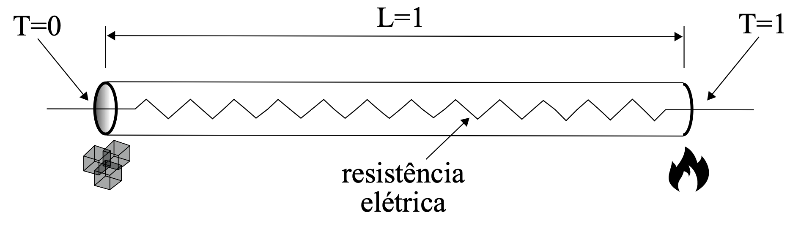

Condução de calor em regime permanente numa barra com geração interna uniforme de calor:
Barra de comprimento L = 1 (fixo no código), discretizada em nₓ nós igualmente espaçados: $\Delta x = L/(n_x - 1)$.
Método das Diferenças Finitas: a segunda derivada é aproximada por diferenças centradas de segunda ordem nos nₓ − 2 nós internos, e o sistema linear tridiagonal resultante é resolvido diretamente.
Solução analítica obtida por integração direta da equação com as condições de contorno acima: